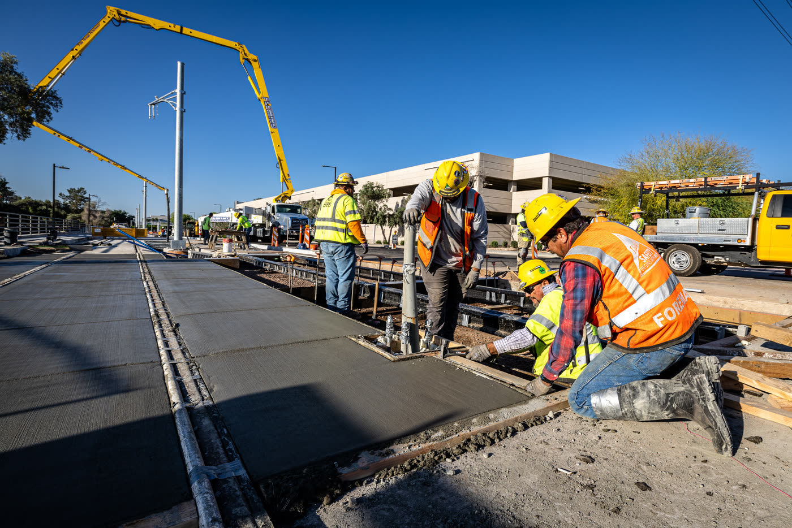

Research
The group works where materials science, mechanics of solids, and structural design meet. Its research covers fiber and textile reinforcement of cement, fracture and interface micromechanics, durability and damage, high strain rate and ballistic composites, numerical simulation, and the design procedures and software built on that work.
Subjects

Fiber reinforced concrete
Fiber reinforced concrete (FRC) is concrete with short steel or polymer fibers added during mixing. The fibers bridge the cracks that form under load, so the cracked concrete keeps carrying tension.

Hybrid reinforced concrete design
Hybrid reinforced concrete (HRC) is concrete reinforced with both continuous steel bars and short fibers mixed through the concrete. The fibers carry tension across cracks and share the load with the bars, so part of the bar reinforcement can be replaced.

Textile reinforced concrete
Textile reinforced concrete is a thin cement-based composite reinforced with layers of fabric made from continuous yarns of glass, carbon or polymer. The group developed the pultrusion process for making these laminates, measured how they crack and harden in tension, formed them into structural shapes and sandwich panels, and derived closed-form equations for their design.

Precast tunnel lining segments
A precast segmental tunnel lining is a ring of curved concrete segments placed behind a tunnel boring machine to support the ground. The group tests full-size segments reinforced with steel or synthetic fibers in flexure and under thrust loads, works the tension properties of the concrete back from beam tests for use in design, and applies statistical process control to segment production.

Ultra-high performance concrete
Mixtures developed with the Arizona Department of Transportation, flexural tests measured with digital image correlation, and a UHPC beam test replayed in 3D with its inverse analysis.

Valley Metro track slab
A light rail track slab reinforced with steel fibers and no rebar, tested over two million load cycles at ASU and built on the Northwest Extension Phase II in Phoenix.
Fields addressed
| Field | Papers | Years |
|---|---|---|
| Textile and fabric reinforced concrete Woven, knitted, and bonded fabrics in fine-grained matrices. Pultrusion and cross-ply laminates, fabric-to-matrix bond, distributed cracking, structural shapes and thin panels, ferrocement, and the aging of alkali-resistant glass. | 82 | 1990–2026 |
| Fiber reinforced concrete, mechanics and design Tensile and flexural response of discrete-fiber composites, residual strength, closed-form moment-curvature and load-deflection solutions, and the parametric design procedures that follow from them. | 73 | 1988–2026 |
| Impact, high strain rate and ballistic composites High-speed tension of fabrics, yarns, and single filaments, drop-weight impact of cement composites, and the characterisation and modelling of Kevlar and Zylon fabrics for jet engine fan blade containment, funded by the FAA and NASA. | 46 | 2004–2026 |
| Numerical modeling and simulation Finite element and discrete element models of cracking members, explicit simulation of fabric under impact, multi-scale and meso-scale formulations, and the constitutive laws those models consume. | 38 | 1991–2026 |
| Durability, shrinkage and damage External sulfate attack and its damage modelling, restrained and free shrinkage cracking, chloride permeability, transport properties, aging, and self-healing. | 32 | 1988–2026 |
| Cementitious materials and sustainability Blended cements with fly ash, slag, and metakaolin, hydration behaviour, mixture development including copper slag reuse, and the reduction of cement content and embodied carbon. | 31 | 1991–2026 |
| Fiber and interface micromechanics Single-fiber and single-yarn pullout, shear-lag interface models, progressive debonding and R-curve interface toughness, and the degradation of interfacial stiffness that governs bridging. | 24 | 1991–2024 |
| Fracture mechanics of cement composites R-curve behaviour, crack propagation and process zone measurement, size effect, and toughening mechanisms in quasi-brittle materials. | 23 | 1988–2025 |
| Ultra-high performance concrete Non-proprietary mixtures from locally available materials, flexural and compressive characterisation, structural connections for precast bridge decks, and serviceability-based design. | 19 | 2016–2026 |
| Hybrid reinforced concrete Sections combining continuous reinforcement with fibers, tension stiffening, load sharing between the two systems, and serviceability-based design at low reinforcement ratios. | 19 | 2010–2026 |
| Processing and manufacturing Pultrusion and extrusion of cement composites, high fiber volume fraction processing, placement methods, and additive manufacturing of layered sections. | 16 | 1996–2026 |
| Pavements, slabs and infrastructure Slabs on ground and elevated slabs, industrial floors, whitetopping and asphalt overlays, airport and highway pavement, light rail track slabs, and shotcrete. | 15 | 1997–2026 |
| Repair, retrofit and strengthening Retrofit of deficient reinforced concrete beam-column joints, masonry rehabilitation with cement-based matrix grids, and externally bonded fabric and FRP strengthening. | 13 | 1995–2026 |
| Functional and specialty materials Work beyond structural concrete, including glass reinforced plastic rods for electric power insulators, biocide coatings to control algal growth in water canals, porous ceramics, wollastonite micro-fibers, and metallic foams. | 13 | 1999–2025 |
| Natural and recycled fiber composites Sisal, jute, and other vegetable fibers in cement matrices, their durability and fatigue behaviour, and the reuse of waste streams as constituents. | 12 | 2008–2025 |
| Structural engineering and design practice Design procedures and code guidance, light-gauge steel systems, optimisation of structural form, and committee work translating research into practice. | 12 | 1999–2026 |
| Precast tunnel lining segments Full-scale flexural testing of fiber reinforced segments, steel against synthetic macro-fibers, back-calculated material properties, and production quality control. | 8 | 2018–2025 |
| Experimental methods and measurement Digital image correlation, holographic interferometry, image analysis of cracking, closed-loop test control, and non-contacting strain measurement. | 8 | 1990–2016 |
| Statistics, quality control and reliability Statistical process control of production data, control charts for concrete strength, back-calculation of properties from test populations, and Monte Carlo treatment of material variability. | 8 | 2009–2025 |
| Early-age behaviour of cement paste Drying and evaporation of fresh paste, early-age moisture loss, and the plastic shrinkage cracking that follows. | 6 | 1988–2025 |
| Engineering education Instructional systems for teaching mechanics of materials. | 2 | 1995–1998 |
A paper can appear in more than one field.
Current areas
Fiber Reinforced Concrete Mechanics
Constitutive modeling and closed-form design of FRC and UHPC. Strain-softening and strain-hardening behavior, residual strength, and parametric design methods presented in ACI 544 guidance.
Closed-form moment-curvature solutions, load-deflection prediction with crack localization, and serviceability-based design. The parametric design approach developed in this group appears in ACI 544.4R-18 for flexural design of FRC.
Hybrid Reinforced Concrete
Sections that combine continuous rebar with fiber reinforcement. Closed-form solutions for neutral axis depth and moment capacity enable direct design instead of iteration.
Hybrid reinforced concrete uses fibers to control cracking and rebar for strength. The group develops generalized solutions covering any number of tension and compression segments and rebar layers, including layered and sandwich sections and FRP-strengthened members.
Textile Reinforced Concrete
Fabric-cement composites for thin, ductile, high-performance elements. Pultrusion manufacturing, bond mechanisms, distributed cracking, and high strain-rate behavior.
TRC pairs multi-axial fabrics with fine-grained cement matrices to produce thin sections with tensile ductility. Current work covers processing, aging, and dynamic response.
Inverse Analysis and Design Tools
Back-calculation of tensile constitutive laws from flexural tests, batch processing of large datasets, and the HRC Designer software that puts these methods in the hands of engineers.
Flexural tests are easy to run, but design needs the tensile law. The inverse analysis methods recover tension models from ASTM C1609 and EN 14651 data, at the scale of single specimens or hundreds of beams, and feed validated parameters into design software.
Experimental Mechanics and DIC
Full-field measurement of strain, crack width, and crack spacing with digital image correlation. Standard and high strain-rate testing of cement composites.
Digital image correlation replaces point sensors with full-field measurement, resolving crack initiation, opening, and spacing through the life of a test. The group applies DIC to monotonic and fatigue flexure, tension stiffening, and high-speed tensile testing.
Structural Applications and Sustainability
Fiber reinforced precast tunnel segments, slabs-on-ground, pavements, and durable infrastructure. Mechanics-based design that reduces material use and carbon.
Design guidance for FRC tunnel segments per ACI 544.7R, industrial floors and slabs-on-ground, and airport and highway pavements. Mechanics-based design lets fibers replace steel where the mechanics justify it, cutting cost, reinforcement congestion, and embodied carbon.
Laboratory
Testing runs in the Structural Mechanics and Infrastructure Materials Laboratory in the School of Sustainable Engineering and the Built Environment, from single-fiber pullout up to full-scale precast sections.
| Equipment | Used for |
|---|---|
| MTS servo-hydraulic test systems | Tension, flexure, panel, pullout, compression, and connection testing |
| Full-scale precast section laboratory | Track slab mock-ups and tunnel segment tests |
| Large-frame flexural set-up | Full-scale flexural testing, 55 kip capacity over an 8 foot span |
| Large-frame compression set-up | Full-scale compression testing |
| 25 kip frame with FlexTest 60 controller | Round panel testing and textile reinforced concrete beams and angles |
| Digital image correlation | Full-field displacement, strain, and crack width measurement |
| Drop-weight impact equipment | Flexural impact testing |
| High-speed tension machine | High strain rate tension of fabrics, yarns, and composites |
| Creep frames | Long-term creep of fiber reinforced concrete |
| Restrained shrinkage rigs | Restrained shrinkage cracking |
Support
Research in the group has been supported by federal agencies, state and regional transportation authorities, and industry.
- National Science Foundation
- Federal Aviation Administration
- NASA
- Arizona Department of Transportation
- Maricopa County Department of Transportation
- Valley Metro Regional Public Transportation Authority
- Salt River Project

Group research in the field on the Valley Metro Northwest Extension.